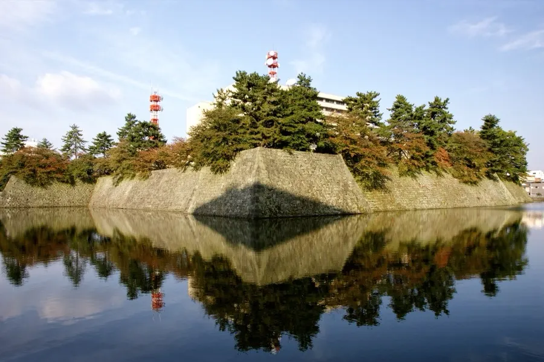
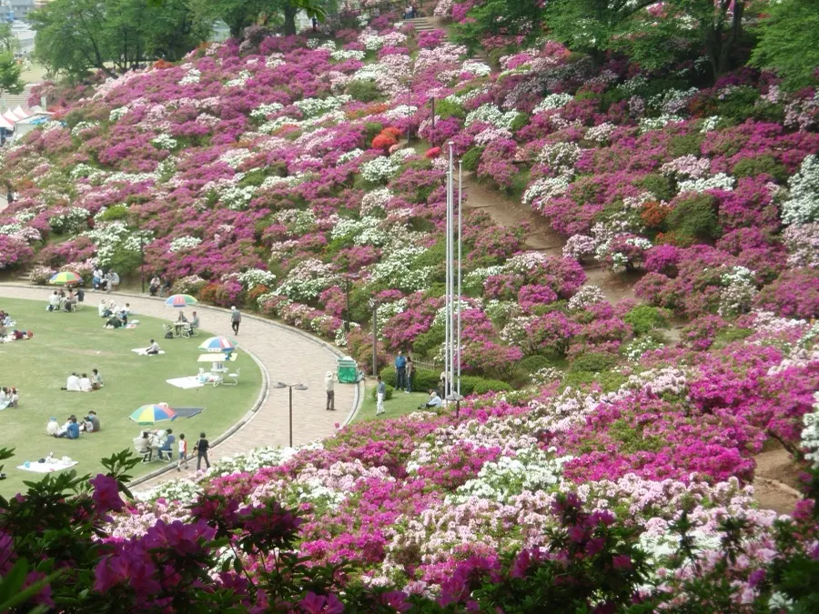
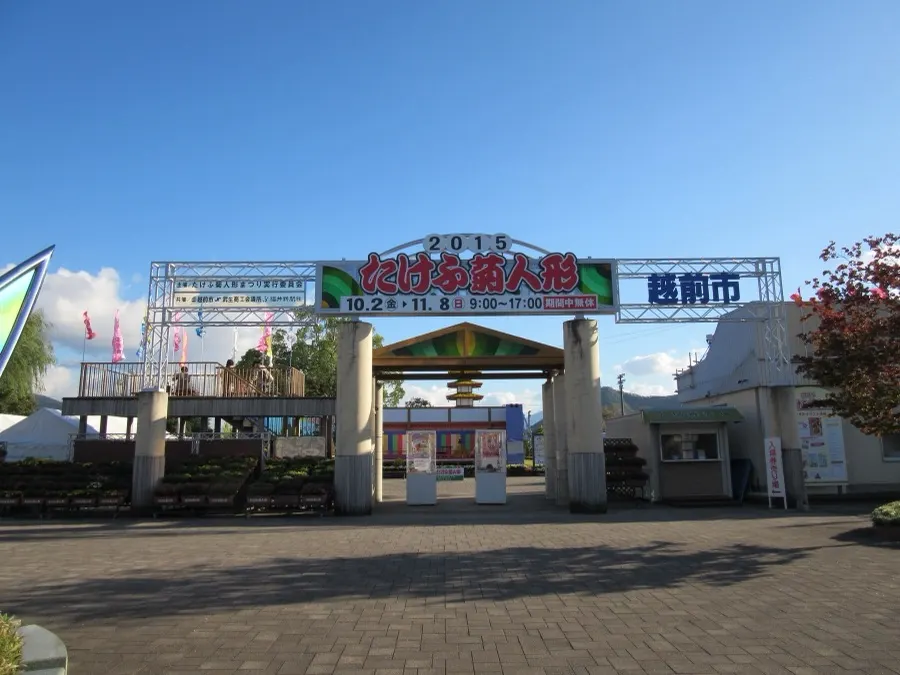

乗車から集印まで、
手順は4つ。
お客さまはアプリを入れない。LINE の告知メニューを1タップするだけで、地図・帳・景品が全て開く。押印には GPS と QR の両方が必要で、片方が欠けると押印は無効になる。
01
LINE 地図を開く
公式アカウントの「さんぽ帳」メニューから LIFF 起動。城下町と対象スポットが単線図で表示される。
02
駅の QR を読む
ホーム掲出の QR、車内 QR をカメラで読み取る。撮影された QR の画像共有はここで無効化される。
03
GPS が半径150m を判定
スマホの位置情報が対象駅の中心から150m圏内であることを確認。圏外の押印は成立しない。
04
硬券が刻まれる
駅コード・座標・押印時刻が刻まれた硬券が台紙に残る。SNSシェアの導線まで内蔵。
Storyboard
観光客の1日は、こう動く。
大阪から福井駅に到着した2名連れ (30代夫婦) の想定シナリオ。
09:30 · 到着
 SP-09
SP-09福井駅前 恐竜モニュメント
サンダーバードで到着。改札を出て恐竜前で写真。公式LINE友だち追加を勧める看板からラリー参加。1個目押印。
10:20 · 徒歩

SP-06福井城址 · 石垣と堀
福井城址大名町駅は1区間だが徒歩でも15分。石垣を歩いて 2個目押印。「あと2個で1杯無料」の通知が届く。
12:30 · 昼
 SP-05
SP-05めがねミュージアム
大野で神明駅まで移動、昼食+眼鏡工房体験。 4個目押印。 LINEでドリンク引換クーポン到着、カフェで受取。
15:00 · 南下

SP-04西山公園 · レッサーパンダ
西鯖江で下車。動物園でレッサーパンダを見て 6個目押印。「あと4個でコンプリート」の通知。
17:30 · 終盤

SP-03武生中央公園
たけふ新まで乗車、菊人形を鑑賞。8個目押印。コンプリートは今日は無理だが、翌週の再訪動機として硬券帳が LINE に残る。